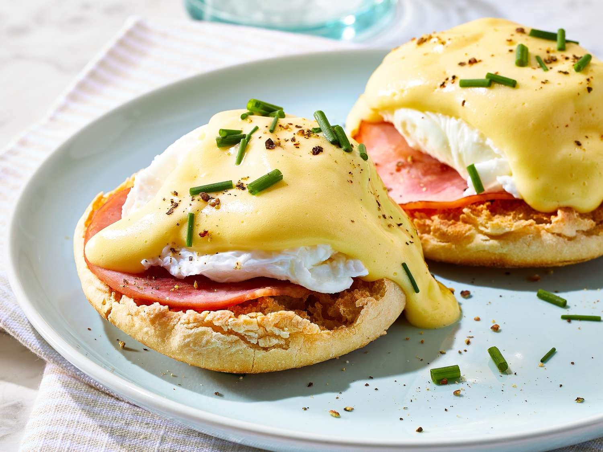

Croissants
Buttery and flaky French croissants.
- Preheat oven to 375°F (190°C).
- Place croissants on a baking sheet.
- Bake for 12-15 minutes or until golden brown.
- Enjoy warm with butter or jam.
More Info
video

Eggs Benedict
Classic eggs Benedict with hollandaise sauce.
- Prepare hollandaise sauce.
- Poach eggs until whites are set and yolks are runny.
- Toast English muffins.
- Assemble with ham, poached eggs, and hollandaise sauce.
More Info
Video
Fruit Salad
Colorful fruit salad with a variety of fresh fruits.
- Wash and chop assorted fruits (strawberries, kiwi, mango, etc.).
- Combine in a large bowl.
- Add a squeeze of fresh lemon juice.
- Chill in the refrigerator before serving.
More Info
Video